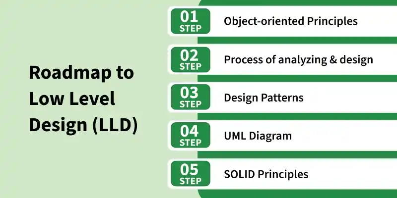
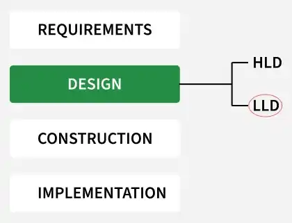

5.5 Low Level Design
Low-level design (LLD), also called detailed design, is the third and most granular level of software design. Once architectural design identifies major modules, LLD specifies the internal elements of every module — their functions, processing methods, data structures, algorithms, and control flow.

HLD vs LLD
| Aspect | High-Level Design (HLD) | Low-Level Design (LLD) |
|---|---|---|
| Also called | Preliminary design, architectural design, program architecture. | Detailed design, module-level design. |
| Focus | Module decomposition, control relationships, interfaces between modules. | Internal logic, algorithms, data structures within each module. |
| Deliverable | Program architecture document; structure charts, UML overview diagrams. | Module specification document; pseudocode, flowcharts, class diagrams. |
| Abstraction | Modules treated as black boxes. | Internal white-box detail of every module. |
What detailed design specifies
- Decomposition of major system components into program units (functions, classes, procedures).
- Allocation of functional responsibilities to each unit.
- User interfaces at the module level (forms, screens, dialogues).
- Unit states and state changes (e.g., order status: pending → confirmed → shipped).
- Data and control interaction between units within a module.
- Data packaging and implementation — scope and visibility of program elements.
- Algorithms and data structures for each unit.

LLD representation techniques
- Pseudocode: Language-independent algorithm description — see §5.8.
- Flowcharts: Graphical control-flow diagrams — see §5.9.
- Structure charts: Hierarchical module invocation — see §5.7.
- UML diagrams: Class, sequence, and activity diagrams for OOD — see §5.16.
LLD design guidelines
- Modular design: Break the system into small, independent components with specific functionalities.
- Clear interfaces: Define methods, inputs, and outputs for each component to maintain proper communication.
- Design patterns and OOP principles: Apply encapsulation, inheritance, polymorphism, and proven patterns for reusability and maintainability.
- Error handling: Plan exception handling and error recovery at the module level.
Module specification document
- After detailed design of each module, the outcome is documented in a module specification document.
- This document is handed to programmers for coding and to testers for deriving unit test cases.
- Structure charts, pseudocode, flowcharts, and decision tables developed during design become part of project documentation.
Exam question — Low-level design
Q: What is low-level design? How does it differ from high-level design? What does detailed design specify?
Model answer points:
- LLD = internal specification of all modules — algorithms, data structures, control flow.
- HLD = module decomposition and interfaces; LLD = internal white-box detail.
- List 7 detailed design items: decomposition, allocation, UI, states, data/control interaction, packaging, algorithms.
- Deliverable = module specification document.
- Techniques: pseudocode, flowcharts, structure charts, UML.